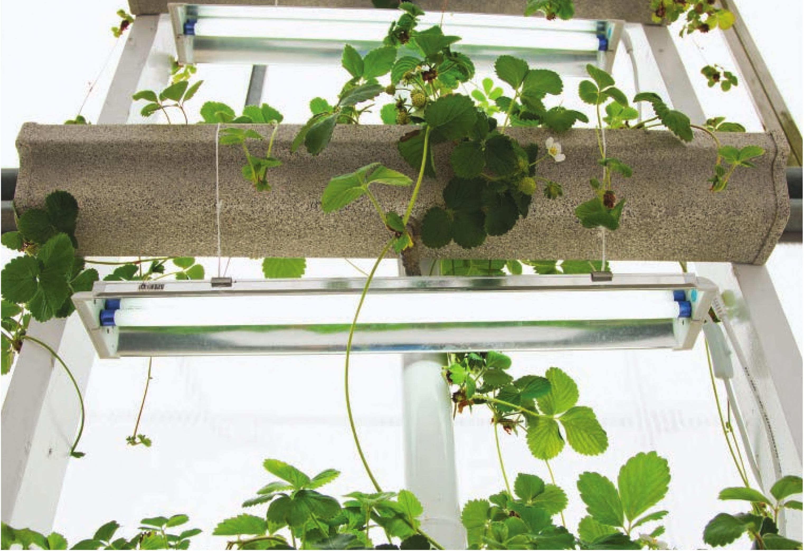

The framework supporting the rain gutter troughs provides ample opportunity for mounting grow lights. Lighting This system can be modified for use indoors by adding grow lights. I added two 2-foot fluorescent lights for the lower two levels to supplement light in the greenhouse. LED light bars are another option. LED light bars are often more powerful than fluorescent lights and may be better suited for gardeners planning on using the rain gutter system indoors. If using this system indoors, you may want to build a fourth level to support a grow light for the top trough. Troubleshooting Trough is leaking from end caps • Drain reservoir and let system dry. • Use PVC cement to attach and seal end caps. No water coming out of multiple levels • Check power to pump. • Check pump for materials clogging intake. • Make sure pump intake valve is in fully open position. • Make sure shutoff valves are open for all levels. No water coming out of one level • Reduce flow from other levels to direct more pressure to dry level. • Completely shut off flow to other levels to force out any debris clogging line. • Loosen any potential debris by pushing an unfolded paper clip down clogged VC line. • Disassemble and reassemble irrigation for that level. It may be helpful to shorten VC irrigation line too. HYDROPONIC GROWING SYSTEMS 135
